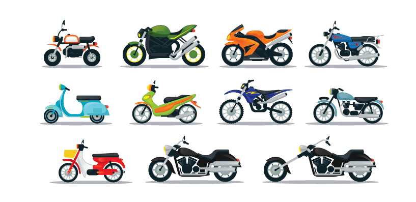

Bikes classified based on Ride Style 
However the following are my personal opinion and it might vary from person to person.Just a recommendation not a compulsion :)
Cruiser Bikes are mainly for people who doesnt like the adrenaline rush and just want a smooth riding experience.This is my personal favourite category.There are various options available but here are some of my recommended ones :)
The Bikes are for ppl who needed to trave daily for city commutes.Though there are high powered vehicles available in this range,it is better to buy bikes in this range for high mileage.
These are a range of motocycles for ppl who need thsat thump and rush and wanted to get their hearts pumping.
These are a mid range super bikes that differs from the general category
These are mainly for female riders and for daily city commutes without much tension about gears..